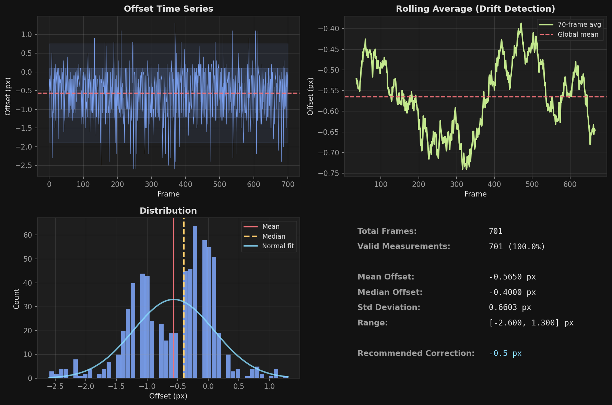
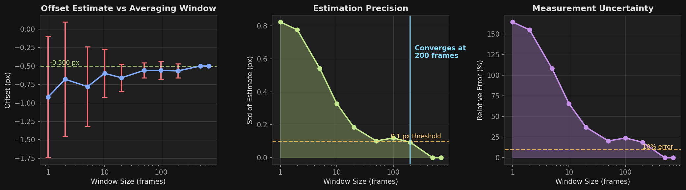
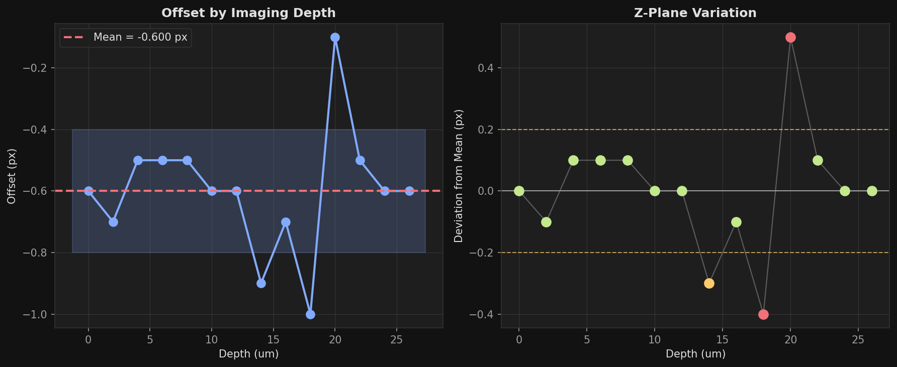

Command Line Interface#
The mbo command provides tools for viewing, converting, and analyzing imaging data.
Command |
Description |
|---|---|
|
Launch GUI with file dialog |
|
Convert between formats |
|
Show array info |
|
Analyze scan-phase offset |
|
Generate template notebooks |
|
Download files from GitHub |
|
List supported formats |
GUI Mode#
mbo # file dialog
mbo /path/to/data # open specific file
mbo /path/to/data --metadata # show only metadata


Convert#
Convert between formats with optional processing.
mbo convert input.tiff output/ -e .zarr # tiff to zarr
mbo convert input.tiff output/ -e .bin # tiff to suite2p binary
mbo convert input.zarr output/ -e .tiff # zarr to tiff
mbo convert input.tiff output/ -e .zarr -p 1 -p 7 # specific planes
mbo convert input.tiff output/ --fix-phase # with phase correction
mbo convert input.tiff output/ -n 1000 # first 1000 frames
Option |
Description |
|---|---|
|
Output format: |
|
Z-planes to export (1-based), repeatable |
|
Limit number of frames |
|
ROI selection: |
|
Bidirectional phase correction |
|
Replace existing files |
All Convert Options
Option |
Description |
|---|---|
|
Custom filename suffix (default: |
|
|
|
Z-plane registration via suite3d |
|
OME-zarr metadata (zarr only) |
|
Streaming chunk size (default: 100) |
|
Verbose logging |
Example: Convert raw TIFFs to OME-Zarr
mbo convert D:/demo/raw D:/demo/volume --ome -e .zarr
Reading: D:/demo/raw
Counting frames: 100%|████████████████████████████| 1/1 [00:00<00:00, 19152.07it/s]
Shape: (119, 14, 448, 448), dtype: int16
Writing: D:/demo/volume (format: .zarr)
Writing Zarr: 100%|███████████████████████████████| 119/119 [00:43<00:00, 2.71frames/s]
Done! Output saved to: D:/demo/volume/tp00001-00119_zplane01-14_stack.zarr
Info#
Display array shape, dtype, chunk info, and metadata without loading data.
mbo info /data/raw.tiff
mbo info /data/volume.zarr
mbo info /data/suite2p/plane0
Scan-Phase Analysis#
Bidirectional resonant scanning causes alternating rows to be shifted horizontally. This tool measures that shift to help configure correction parameters.
mbo scanphase # file dialog
mbo scanphase /path/to/data.tiff # analyze file
mbo scanphase ./folder/ -n 5 # first 5 tiffs
mbo scanphase data.tiff -o ./results # custom output
mbo scanphase data.tiff --show # show plots
mbo scanphase data.tiff --format pdf # output as pdf
Output Files:
Offset time series + histogram. Should be flat; large jumps indicate motion/hardware issues. Typical offset: 0.5-2.0 px.
{kind=link}
Offset vs window size. Shows how estimate stabilizes with more frames. Red line marks where std drops below 0.1 px.
{kind=link}
Spatial heatmaps (32x32 and 64x64 patches). Edges different from center is normal. Gray = low signal.

Offset vs depth (if multi-plane). Assess if offset varies with z due to resonant scanner angle.
{kind=link}
Offset vs signal intensity. Red line suggests threshold below which measurements are noisy.

Tips: Use -n 2 or -n 3 to run quickly on a subset of frames. Multi-ROI data: offsets are averaged across ROIs.
Notebook#
Generate template notebooks for common analysis pipelines.
mbo notebook lsp # LBM-Suite2p-Python pipeline
mbo notebook basic # basic data exploration
mbo notebook dff # delta F/F analysis
mbo notebook lsp -d /path/to/data # pre-fill data path
mbo notebook lsp -o ./notebooks # custom output directory
mbo notebook lsp -n my_analysis # custom name: yyyy-mm-dd_my_analysis.ipynb
mbo notebook -l # list available templates
Option |
Description |
|---|---|
|
Output directory (default: current directory) |
|
Custom notebook name (date prefix auto-added) |
|
Data path to pre-fill in the notebook |
|
List available templates |
|
Show custom templates directory path |
Available Templates:
Template |
Description |
|---|---|
|
LBM-Suite2p-Python full pipeline with imports, ops config, and visualization |
|
Basic mbo_utilities data exploration with imread/imwrite |
|
Delta F/F analysis with compute_dff and activity maps |
Templates show full function signatures with all parameters, formatted for easy customization.
Download#
Download files from GitHub (auto-converts blob to raw URLs).
mbo download https://github.com/user/repo/blob/main/notebook.ipynb
mbo download https://github.com/user/repo/blob/main/data.npy -o ./data/
Downloading from:
https://raw.githubusercontent.com/.../quickstart.ipynb
Saving to:
C:\Users\...\quickstart.ipynb
Successfully downloaded: quickstart.ipynb
{kind=link}
Utilities#
mbo --check-install # verify installation and GPU config
mbo --download-notebook # download user guide notebook
mbo --download-file URL # download any file
mbo_utilities v2.4.3 | Python 3.12.12
==================================================
CUDA Environment:
Driver CUDA: 12.6
Features:
[Γ£ô] PyTorch
[Γ£ô] CuPy
[ ] Suite2p (not installed)
[ ] Suite3D (not installed)
[ ] Rastermap (not installed)
Formats#
mbo formats
Input: .tif, .tiff, .zarr, .bin, .h5, .hdf5, .npy, .json
Output: .tiff, .zarr, .bin, .h5, .npy
Upgrade#
Method |
Command |
|---|---|
Install script |
Re-run install script |
CLI only |
|
Virtual env |
|